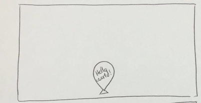

Description:
You are to sketch the design of a net art work that makes
use of some measurement of data being sent across an
Internet communication link. You could, for example, make use
of how many characters were being sent, how many 0's were
sent, or even aspects involving the destination address or
sender.
You do NOT need to implement this piece.
You need to explain what measurments/values will be needed,
how they will be used in the piece, and what other
assets will be used.
You do need to sketch the work visually, and show transiations
and explain visually how the data will be used.
The Idea is to have a phone line connected with the Net piece. The piece will have its own phone number, that way individuals coming to see the art can text the piece.
The piece consists of a balloon which is inflated initially!
As people enter the location of the art, they can send a message to the balloon. Individuals are allowed to send anything and it will be anonymous. Once the message is received, it will be display play in the balloon.
Every time there is a message: The balloon grows and grows, showing all the messages been sent to the art.
Of course, balloons can only grow so much. After the balloon has received so much Air(text), it will reach its maximum growth capacity causing it to...
BLOWW UP!!
After the balloon blows up, all the words would go flying all over the place, and fall under the screen and a new balloon will appear. Restarting again.